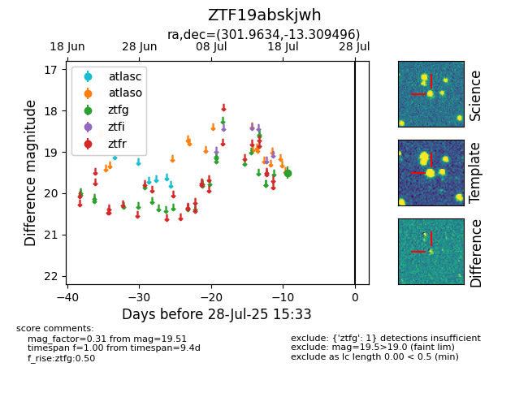

Target ZTF19abskjwh at 2025-07-23 11:52, see:
FINK: fink-portal.org/ZTF19abskjwh
Lasair: lasair-ztf.lsst.ac.uk/objects/ZTF19abskjwh
ALeRCE: alerce.online/object/ZTF19abskjwh
alt names
ZTF19abskjwh (ztf,fink)
coordinates:
equatorial (ra, dec) = (301.9634,-13.30950)
galactic (l, b) = (29.2199,-22.85661)
photometry
last ztfg=19.51
1 ztfg detections
